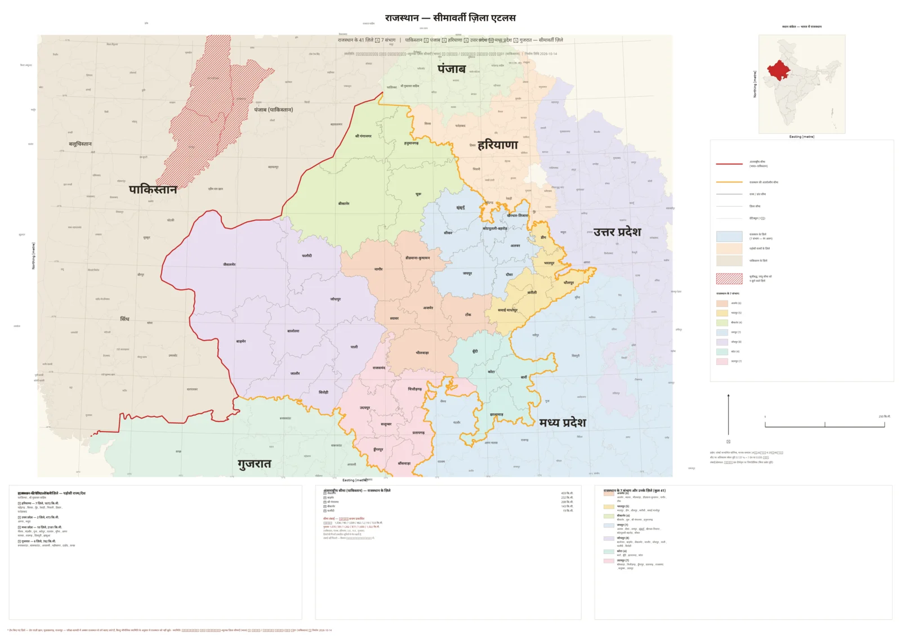

Rajasthan Map Resources
Preview the existing repository atlas, open a full-size export for zooming, and inspect the corresponding district data, source registers and QA reports.

Source and review status
Map versions and exports
Each file is an existing repository asset. Preview, reference image and generated exports are labelled separately; no source image was overwritten.
Open the full-size image through the labelled action above. Export links will populate from the checked-in resources catalogue.
Boundary districts and CSV metadata
The table is an accurate rendering of values stored in the CSV, but the data's geographic and temporal interpretation needs verification. These are not recomputed or silently corrected.
| Neighbour / province | Districts listed in CSV | Review status |
|---|---|---|
| Open source summary CSV | Not computed in this static fallback | Needs verification |
District names from the checked-in border-only dataset
Browse state/province groups
Open the unchanged border-only CSV or the Rajasthan Geography page for the manifest-rendered names.
The published-vs-GIS lengths conflict in the repository's discrepancy report. See D-2 and the CSV side-by-side, rather than choosing one figure here.
Acceptance tests and metadata
Use the acceptance-test CSV and report to understand what the original atlas build recorded as PASS, REVIEW or NOT TESTED. This page does not upgrade those labels.
Key files: acceptance tests, build metadata, border-length cross-check.
Source registers and audits
Read both distinct source trees: atlas source register and input-audit source register.
For a file-by-file size, SHA-256, dimensions and website-reference audit, open the geography structure and asset inventory.